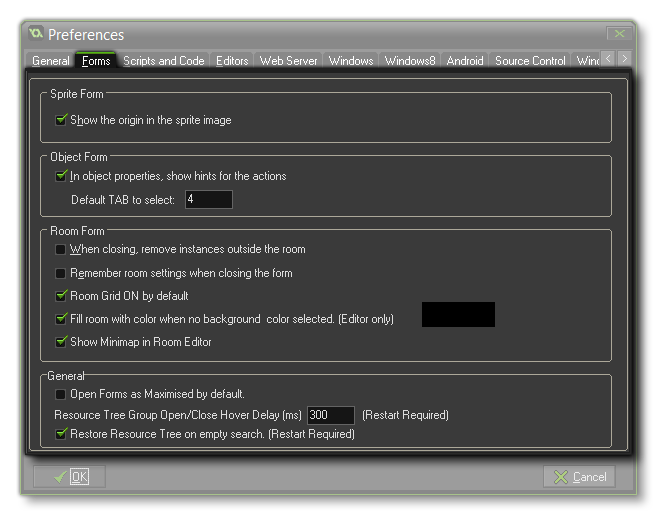

The Forms Preferences tab deals with the visual aspect of some of the standard GameMaker: Studio windows. It is split into four main sections, each of which is outlined below:
- Show the origin in the sprite image: If checked, in the sprite image of the sprite properties form, the origin for the sprite is indicated visually with a cross.
- In object properties, show hints for actions: If checked then in the object properties form when you hold your mouse over one of the actions, a tooltip description is shown.
- Default Tab to select: This allows you pick the default action tab when opening the object window. This can be handy, for example, if you only ever use the code action as you can then set this to select tab 4 and it will save you having to pick it every time. This option also works for Timelines.
- When closing, remove instances outside the room : If checked, the program warns you when there are instances or tiles outside a room and gives you the option to remove them.
- Remember room settings when closing the form: If this is checked, then a number of room settings, like whether to show the grid, whether to delete underlying objects, etc. are remembered when you edit the same room later.
- Room Grid ON by default: This allows you to disable the room grid each time a new room is opened or created.
- Fill room with colour when no background colour selected: If you create a room and don't give it a fill colour it will normally fill it with the user definable default colour. If you untick this box then you will see the default user definable grid through the room. This can sometimes be useful to help visualise a level.
- Show minimap in room editor: Unchecking this option will remove the minimap from the GameMaker: Studio minimap.
- Open forms as maximised by default : If checked, the program will try to open all windows maximised.
- Resource Group Open/Close Hover Delay : This option sets the delay time (in milliseconds) after which the GUI will detect any assets being relocated to a group folder in the resource tree.
- Restore Resource Tree On Empty Search: This option will restore the resource tree to its default layout if an empty search is given.